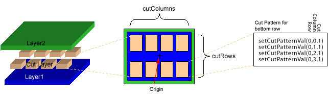
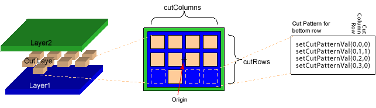

|
 |
 |
||||||
|
|
|
||||||
When large via cuts need to be implemented as a series of small rectangles, a custom cut pattern can be established to specify which of the rectangles in the cut grid should be instantiated. To establish this pattern the caller must have first set the size of the cut array with setCutColumns and setCutRows. Then individual cut rectangles may be made present or not with setCutPatternVal. An argument of 0 means that the corresponding rectangle is not used. An argument of 1 means that it is present. Row 0 column 0 of the cut grid is at the lower left corner.
Use the getCutPatternVal function to return the cut pattern information.
The first example shows a symmetrical two row, four column cut pattern. The via origin is centered at 0,0 and no cuts are "zeroed out," or removed from the symmetrical pattern.
The setCutPatternVal definitions are defined as (row, column, cut). The row and column values always start at zero. Cut is a boolean value. The setCutPatternVal values for the bottom row of the first sample cut pattern are shown below.

The next example shows a three row, four column cut pattern. The via origin is centered at 0,0. In this case, some of the cuts are removed from the pattern. The setCutPatternVal values for the bottom row of this second sample cut pattern are shown below.

The third example shows the same cut pattern, but with an origin offset applied. For example, an offset of (100,100) moves every shape up and to the right. The origin offset is applied to the entire via shape, so the offset is not affected whether a cut is applied or is removed.

Return to Programmers Guide topics

Copyright © 2001-2010 Cadence Design Systems, Inc.
All rights reserved.